The Top 1%
ECON 499: Economics of Inquality
Winter 2018
Four questions:
- What is inequality?
- What causes inequality?
- What are the consequences of inequality?
- What can we do about inequality?
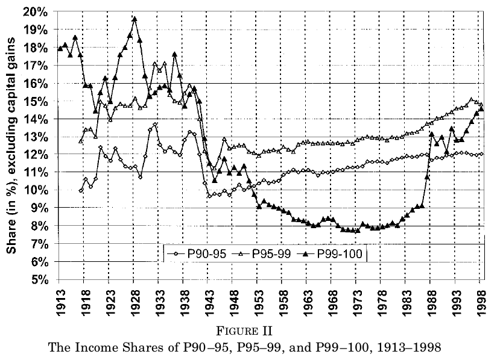
What's causing top incomes to diverge?
- Piketty and Saez speculate that tax rates and "social attitudes" are responsible
- Do not provide conclusive evidence
- Other explanations: Political "capture," exploitation, fraud, skills, etc
- Matters for policy (LeBron James parable)
Kaplan and Rauh (2013)
- "It's the Market: The Broad-Based Rise in the Return to Top Talent"
- Does the top 1% "earn" their income, or do the get it though other means?
Economic rents
- Things that are used in production of goods and services are called factors of production (labor, machines, factories, etc)
- Factors are compensated because they are productive (wages, interest, etc)
- A payment received by a factor beyond what can be explained by their productivity is a rent
- Examples: Occupational licensing, monopolies, patents
- A rent is wealth that is earned through a process that does not itself create wealth
- Are top wage earners very productive, or do they receive rents?
Executive power
- Top CEOs exert power over their companies and boards
- They might be able to use this power to pay themselves more than what they are otherwise worth (extract rents)
- If so, we expect CEO pay to diverge from other top earners
- This is not what we observe

Top CEOs
- It does not appear that executive pay is driving the change in top earnings
- Whatever the cause, it is affecting executives and their non-executive peers equally
Other industries
- If CEOs are leveraging their power to get higher incomes, then their income should be rising faster than other high-payed workers
- Kaplan and Rauh consider hedge-fund managers, lawyers, and professional athletes
- Managerial power is unlikely to explain rises in all these professions
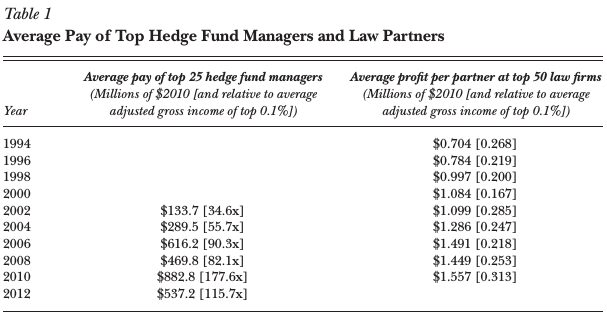
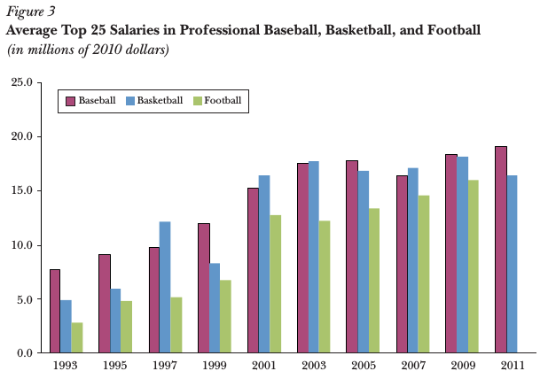
Kaplan and Rauh:
…the breadth of the occupations that have seen a rise in top income levels is much more consistent with the argument that the increase in "superstar" pay (or pay at the top) has been driven by the growth of information and communications technology, and the ways this technology allows individuals with particular skills that are in high demand to expand the scale of their performance
Piketty and Saez top incomes
- Piketty and Saez measure top incomes at a "peak"
- Extended time series more volatile
- While increasing "by any measure," less severe when looking at longer time periods
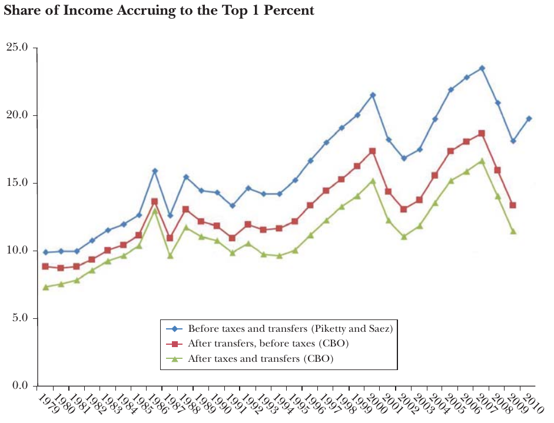
Inherited wealth
- Do high income earners have an unfair advantage at birth?
- Can parents "buy" income for their children?
- Do the wealthy create institutions that prevent the non-wealthy from participating?
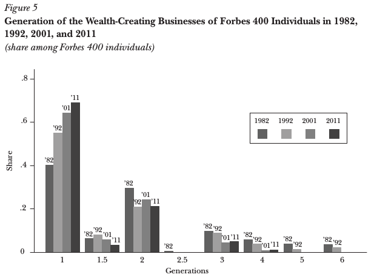
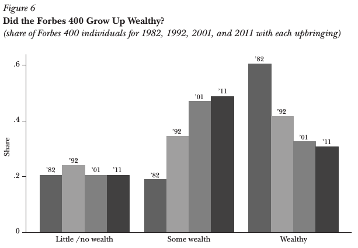
Inherited wealth
- High income earners today are less likely have high-income parents than in the past
- However, they are more likely to have upper middle class parents
- No change in the number of top income earners from low-income backgrounds
- Very few of the wealthiest CEOs are from poor families
- High income earners have more education than in the past (much more on this later in the course)
Access to education
- Family wealth allows for parents to invest in education
- If top incomes are the results of skills, then education becomes more important
- Share of Forbes 400 who graduated college increased 77-87% between 1982 and 2011
- Share of those without any college dropped from 17% to 5%
Skills
- Most of the pay increase is in industries that require specialized skills
- Computers and IT require education, finance has become extremely complex
- Executives in these fields must be highly trained, oversee many other highly trained employees

Family wealth
- Having (some) family wealth seems to be more important in the US than in other countries
- This might be due to education being more expensive, or education more rewarded in US markets
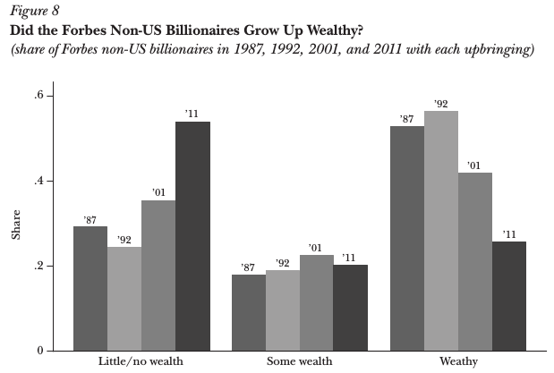
Bonica et al (2013)
- "Why Hasn't Democracy Slowed Rising Inequality?"
- Anecdotally, people seem to care as much (or more) about inequality today as in the past
- Why haven't voters demanded redistribution?
- Article written by prominent political scientists (in an economics journal)
Polarization
- Parties have become more extreme politically
- Moderate Republicans have left Congress, more conservative Republicans have entered
- Moderate Democrats have been replaced by Republicans, remaining Democrats move left on average
- Polarization closely correlated with inequality
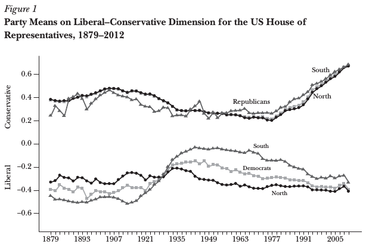

Causality?
- Inequality could cause polarization to increase — wealthier people may have different political preferences than non-wealthy
- Polarization might cause inequality — more legislative gridlock, government less responsive to market changes that increase inequality
- A third factor might be causing both simultaneously
Deregulation
- Fewer financial regulations encourage highly-educated people to go into finance
- Educated people are more skilled, get higher wages
- Wages and education in finance closely correlated with polarization
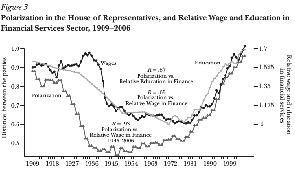
Voting
- Wealthier people more likely to vote
- May be more likely to vote for policies that favor the wealthy
- Top 1% give more of their income to politicians, represent larger share of total political donations
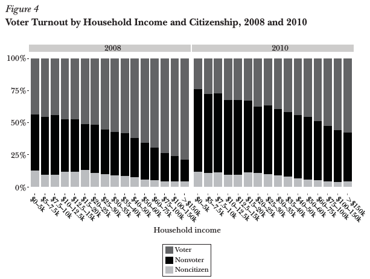
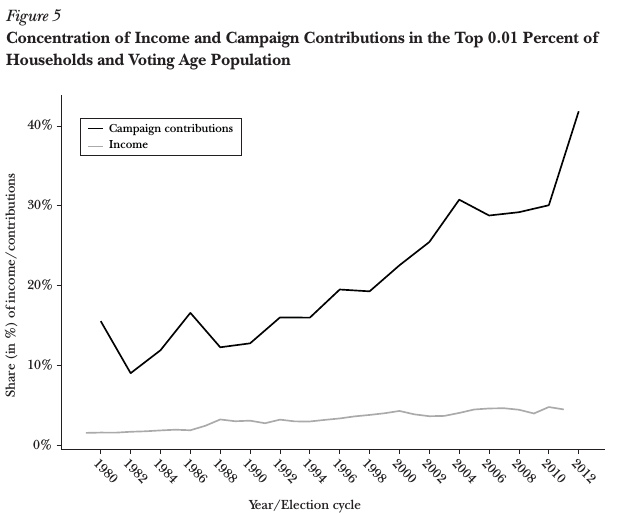
Left vs right?
- US political system is largely "winner-takes-all"
- If wealthy are affiliated with one party, then redistribution policies might be enacted if other party is in power
- If wealthy are in both parties, then neither party will support redistribution

Summary
- Top incomes are largely driven by market forces, return to talent
- Top earners give more money to politicians than anyone else
- Top earners and donations are (for the most part) evenly distributed on the left-right divide
- Gridlock means government cannot respond to changes in market that give rise to inequality